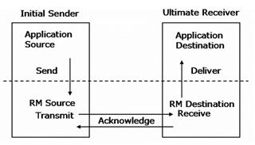
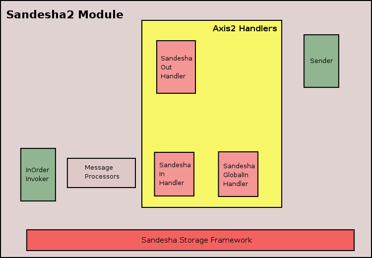

Sandesha2 implements WS-ReliableMessaging for Axis2. From the point of view of the Axis2 engine, Sandesha2 is a module. When this module is engaged to a service, that service get reliable messaging capability. According to the WS-ReliableMessaging specification reliable communication happens between two endpoints. These two are called the RM Source and the RM Destination. Before communication, RM Source and RM Destination do a message exchange to create something called a sequence. A sequence is always identified by a unique sequenceID. The messages of a sequence are numbered starting from one.
The reliability is obtained basically using acknowledgements. the RM Source is required to send each messages one or more times. RM Destination send back acknowledgements to notify the successful reception of messages. After receiving the acknowledgement for a certain message RM Source can stop retransmission of that message.
When all messages of a certain sequence have been successfully transmitted to the RM Destination, RM Source sends a TerminateSequence message to the RM Destination. If RM Destination receive this it can free any resources allocated for this sequence.
Folliwing popular diagram explains the most basic operations of the RM Source and the RM Destination.

Application Source which is basically the client code gives the messages to the RM Source. RM Source first does the initial message exchange with the RM Destination and establish a sequence. After that RM Source send the messages one or more times. RM Destination send back Acknowledgements. After receiving acknowledgements for all the messages RM Source will send a TerminateSequence message to the RM Destination.
RM Destination will obtain the messages and invoke them by passing to the Application Destination. If RM Destination is confugired to invoke the messages in order, it will have to pause the invocation of some messages until all previous once have been received and invoked.

Above diagram explains the basic architecture of Sandesha2. Let's try to understand each part of this in detail.
Sandesha module deploy three handlers into Axis2 phases.
1. SandeshaOutHandler
2. SandeshaInHandler
3.SandeshaGlobalInHandler
SandesOutHandler is the only handler added to the outFlow by the Sandesha2 module. This handler stops the out going application messages till a sequence is established. The handler is deployed to the RMPhase of the outFlow.
SandeshaGlobalInHandler is deployed to the predispatch phase (of inFlow) when the RMModule is engaged. So this get called for all the messages that come to Axis2. This does functions that should be performed globally such as duplicate detection.
SandeshaInHandler is the second handler of the inFlow. Since this is situated in the RMPhase which comes after the dispatch phase, this handler get called only for messages that come to RM enabled services.
Sender is responsible for transmitting and retransmitting messages. The sender is a seperated thread that keeps running all the time. At each iteration Sender check the Sandesha2 Storage to see weather there are any messages to be sent. If there are any those messages are sent. If the message does not have to be retransmitted the Sender delete this entry from the Storage. Otherwise the entry is only modified, and will be sent at some other time. How exactly this happens will be explained later.
Sandesha2 have a set of message processors each extend the MessageProcessor interface. Each message processor is responsible for processing a certain type of message. For example CreateSequenceProcessor will process incoming Create Sequence messages and Acknowledgement processor will process incoming Acknowledgement messages. Please check the class diagram to see all the MessageProcessors.
InOrderInvoker is another seperate thread started by the sandesha2 system. This is started only if Sadesha2 has been configured to support InOrder Invocation delivery assurance. This is responsible for invoking messages of a sequence in the order of message numbers.
Sandesha Storage Framework is the cornerstone of Sandesha2. This was designed to support the RM Message exchage while being independent of the storage implementation used. Two main storage implementations are InMemory storage implementation and Database based storage implementations.
Storage framework define several beans that extend the RMBean storage (so these are called RMBeans). Currently there are five RMBeans. They are.
Each storage implementation should have five BeanManagers that define how to manage each of these beans. There are five BeanManager interaces that define how the managers should be defined. Also there is a StorageManager interface that define methods to create each of these BeanManagers. Another interface called Transaction has general transaction methods like commit and roleback.
Collectively each Sandesha2 storage implementation should have following classes.
After implementing these the user has to add these to the classpath (may be as a jar) and include the name of the StorageManager implementation class in the sandesha2.properties file. This will tell Sandesha2 to use this storage implementation as the default (this will need a restart of the Axis2 engine).
You can instruct Sandesha2 to give the delivery assurance you want. The bacis configurable delivery assurance we provide is the odering of messages. By setting the InOrderInvocation property of sandesha2.properties file to true (the default), you can tell sandesha2 to invoke messages of a sequence in the order. Order will be decided based on the wsrm:messageNumber. If you set this property to false, sandesha2 will invoke messages as they come. Please note that if you set an invalid value to this property, sandesha2 will use the defult.
Which delivery assurance to use depend on your requirements. If you want want the invocation to be as fast as possible and if you do not care about ordering, set the property to false. If you want ordering, set it to true. There could be a considerable performance improvement if you set this to false.
Internally sandesha2 start a special thread if inorder invocation is required (InOrderInvoker). This thread which is continuously running will only invoke the messages in order.
In the current implementation each message (identified by sequenceID and message number) will be invoked only once. So exactly once delivey assurance is guaranteed. You cannot ask sandesha2 to invoke the same message more than once.
This part explains how Sandesha2 framework work internally for the most common RM scenario. Which is the sending of a couple of Ping messages from a client to the server. We will mailnly look at how Sandesha2 use its storage to do the RM message exchange correctly. While reading this please keep in mind the RMBeans and their fields which were mentioned before.
Client side
Sometime later the client side receives an Create Sequence Response message from the server. The SandeshaInHandler which is the Sandesha2 handler in the InFlow finds this and delegates the processing to the CreateSequenceResponse message processor. It finds the correct CreateSequence manager entry using the createSequenceMessageID property (the value of the create sequence message ID comes in the relatesTo part of the Create Sequence Response message).
Server side